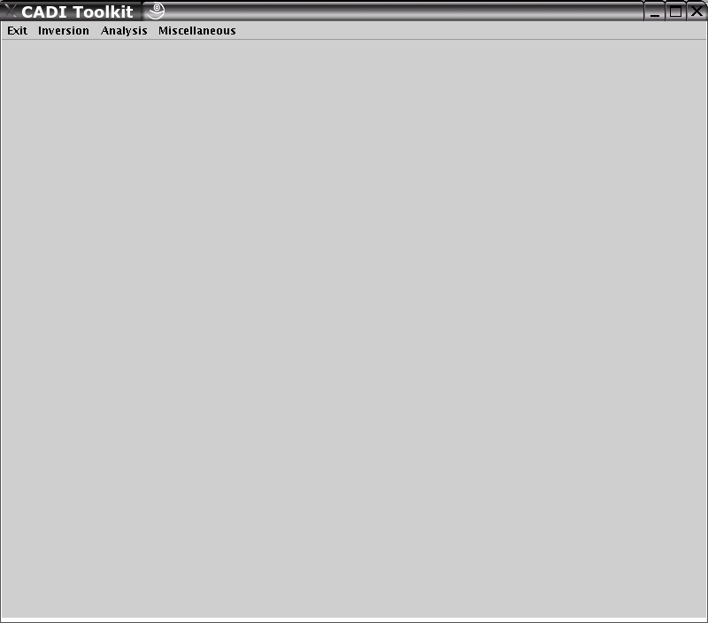
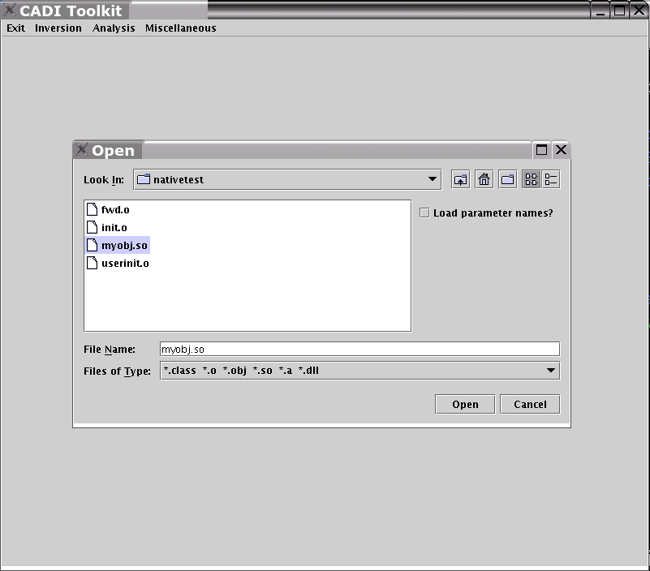
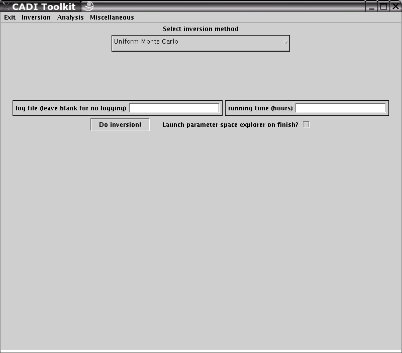
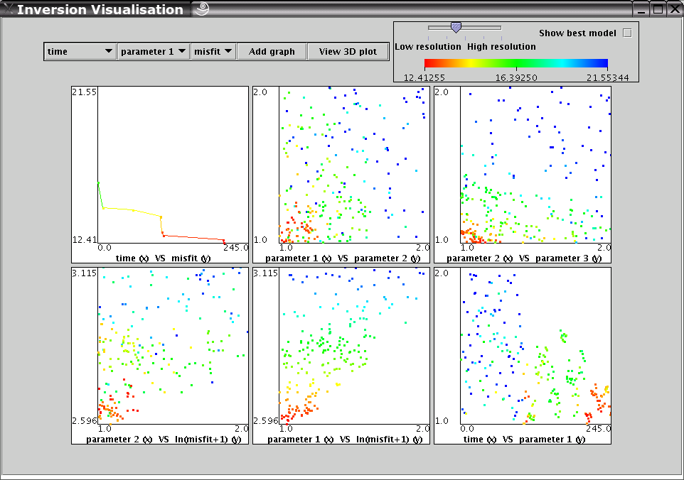

Optimisation is the process of attempting to minimize some mathematical function. Usually, this function does not have a closed-form, and cannot be written down and manipulated in mathematical language. Instead, the function is often the result of a complex simulation that describes a particular physical problem.
The toolkit has several built-in methods for performing such minimization. You simply need to provide your own piece of code that describes the function to be optimized. Your piece of code can be written in any language that compiles to a binary (such as C/C++/Fortran etc), or any language that compiles to Java byte-code (such as Java).
In order to use the toolkit for optimisation, you need to do certain things, depending on whether you want to plug in binary compiled code (C/C++/Fortran/Ada/etc) or Java class file code.
Concrete examples follow, but it is worthwhile aquainting yourself with the basic details and requirements first.
Requirements for binary-compiled languages (C/C++/Fortran/Ada/etc)
Requirements for Java class files
You need to compile you code before you can plug it in to the toolkit. The following examples have full source code and instructions on how you would do this. The examples are all extremely simple, and can be solved analytically (i.e. it is silly to optimise them). We present such simple examples for illustrative purposes only.
Remember the object file or class file you create in this step, as you need to select it in step 3.
At a shell or DOS prompt, you need to type the following:
java -cp /tmp/cadiclient CadiClient /tmp/cadiclient --local
|
To start the toolkit in stand-alone mode. |
java -cp /tmp/cadiclient CadiClient /tmp/cadiclient --distributed
|
To start the toolkit in distributed mode. |
The path argument (in this case /tmp/cadiclient)
should be the absolute path to wherever you installed the client
part of the CADI toolkit.
If all goes, well, you should see some information printed to the console, and then a window will pop up.
$ java -cp /tmp/cadiclient/ CadiClient /tmp/cadiclient |
|  |
From the 'Inversion' menu, select the 'start new inversion' option. You will then be prompted to choose the compiled code that you created in Step 1.
|  |
You should now choose, from the drop down list, the optimisation method you with to use. After you select a method, you will need to make a few choices (such as how long to run the optimisation for, and so on). After you have made these choices, click the 'Do Inversion!' button.
|  |
A new window will now pop up where you can monitor the progress of your optimisation be viewing plots that update in real time. You can safely close this window without aboting your optimisation.
|  |